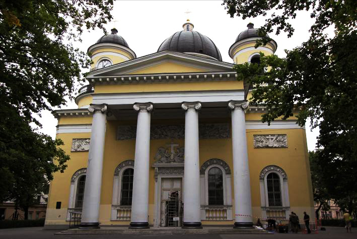

Реставрационные технологии
Этапы нашей работы:
Мы выполняем как все этапы поочередно, так и каждый этап в отдельности.
Этапы нашей работы:
Мы выполняем как все этапы поочередно, так и каждый этап в отдельности.
Натурное обследование (интерьеры, экстерьеры) объектов каменного и деревянного зодчества в любом состоянии, за любой исторический период: выявляем дефекты и причины их появления |
|
| Натурное обследование конструкций зданий и сооружений предназначено для объективной оценки их технического состояния при приемке в эксплуатацию или с учетом произошедших во времени изменений. В результате обследования делается заключение о пригодности конструкции к эксплуатации или о необходимости проведения ремонта, разрабатываются мероприятия по усилению конструкций. |  |
| Технические экспертизы назначаются для установления фактического качественного состояния конструкций в следующих случаях: при увеличении воспринимаемых нагрузок для определения необходимости и мероприятий по усилению; перед назначением здания на реконструкцию, даже если при этом не предполагается увеличение нагрузок; при периодической оценке технического состояния зданий и сооружений; если в процессе эксплуатации или строительства выявлены дефекты, которые могут нарушить нормальную работу конструкций. | |
| Если конструкции зданий подвергались воздействиям, не предусмотренным при проектировании (перегрузкам,
стихийным бедствиям, высоким температурам - предварительный осмотр; - ознакомление с документацией; - осмотр объекта в натуре; - обмеры — установление генеральных размеров конструкций (пролетов, высот - выявление, установление характера и регистрация трещин, дефектов и повреждений; - проверка качества материала в сооружении и контроль состояния стыков и соединений; - обследование фундаментов и грунтов основания; - поверочные расчеты несущих элементов; составление технического заключения. |
Составляем перечень первоочередных противоаварийных работ |
|
| Первоочередные противоаварийные работы проводятся по разрешению КГИОП, в том числе
если объект входит в состав комплекса культурного наследия регионального значения. В связи
с изменениями федерального законодательства об объектах культурного наследия в настоящий
момент по заказу пользователя разрабатывается проект реставрации и приспособления зданий
для современного использования, прохождения ими государственной |
|
| Производится установка конструкций по усилению и поддержке сруба, демонтаж и складирование черепицы в целях облегчения нагрузки на несущие конструкции здания и устройство кровли, демонтаж линолеума и плитки советского времени, демонтаж аварийных участков конструкций перекрытия, проведение дополнительного обследования технического состояния памятника. | |
| Все этапы работ проводятся с подробной фотофиксацией. |
Изучаем в лаборатории краски, живописные слои, все виды камней, древесины, металлов (бронза, серебро, золото) |
|
| Конечной целью любого реставрационного процесса является сохранение реставрируемого объекта в течение максимально длительного времени. Это достигается путем осуществления таких операций, консолидация деструктированного авторского материала, восполнение утраченных фрагментов, удаление загрязнений, нанесение защитных покрытий и др. Для выполнения этих операций требуется большой ассортимент реставрационных материалов. | |
| Выбор реставрационного материала является одним из важнейших этапов реставрационного процесса, поскольку мы имеем многочисленные свидетельства того, как в результате применения непригодных материалов или неправильной технологии их использования ценнейшие памятники культуры либо безвозвратно утрачены, либо находятся в аварийном состоянии. |
Разрабатываем технологические схемы реставрации и консервации |
|
| Технологические методики реставрации необходимы как на стадии разработки и приспособления памятников, так и при проведении реставрационных работ. Составляются с учетом исторической достоверности на базе данных, полученных в результате проведения комплексного обследования фасадов и интерьеров архитектурных памятников, представляющих особую культурную ценность. |  |
| Разработке технологических методик предшествует ряд |
|
| Отступление от разработок возможно только с согласия автора проекта. |
Готовим проектную документацию |
|
| Составляются отчеты, в последующем согласовывающиеся в органе охраны объектов культурного
наследия, в которых подробно изложены результаты лабораторных испытаний. Документы включают
методические рекомендации по «оздоровлению» и реконструкции поврежденных фрагментов, выбору
восстановительных мероприятий и строительных материалов, подобранных с учетом показателей
совместимости с подлинным объектом с целью консервации исторических зданий, защите и возрождению
культурных памятников. Данные отчеты в дальнейшем используются на стройке в качестве регламентирующих документов реставрации. |